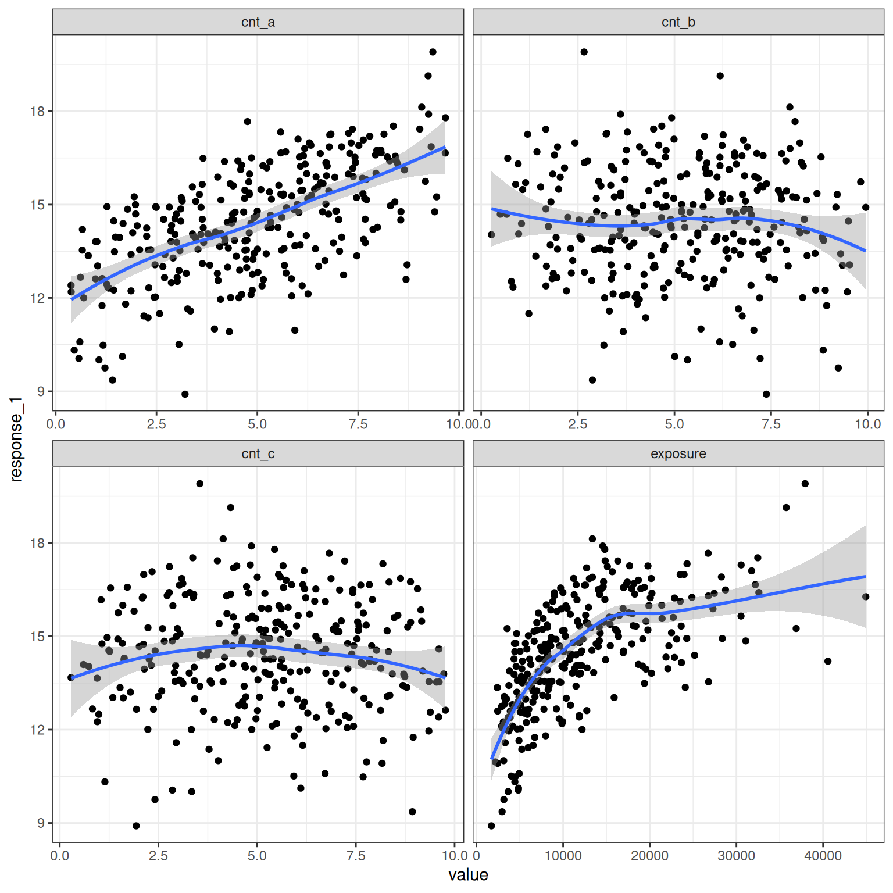
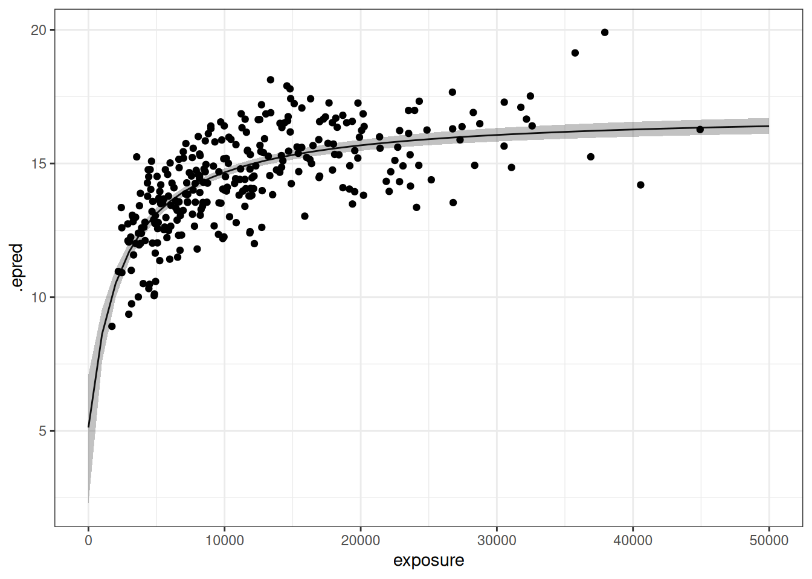
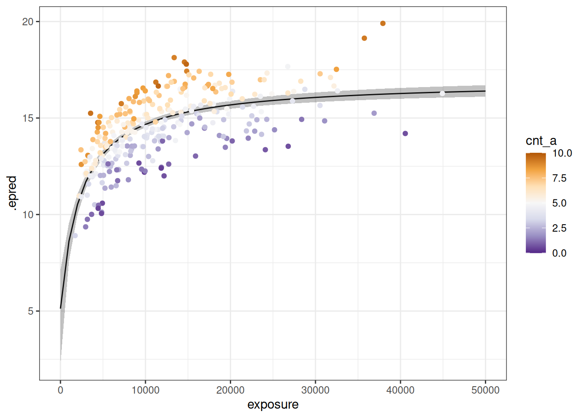

![]()
library(brms)
library(dplyr)
library(tidyr)
library(tibble)
library(ggplot2)
library(tidybayes)This is another in the ongoing series of posts I’ve written on pharmacometrics. As usual I feel a little cautious writing about this topic because I’m still relatively new to this field,1 but fortunately for my impostor syndrome this is a post about Bayesian Emax regression models for exposure-response analysis, and as it happens I’ve worked with these tools a few times before. In fact, one of my ongoing collaborations has been with the very wonderful Kenta Yoshida, in which I’ve helped out with some updates to the rstanemax and BayesERtools R packages, and contributed a few chapters to the BayesERbook guide that Kenta has been leading. It’s been a lot of fun. I love it when my professional life lets me work on projects that are legitimately enjoyable. 🎉
So okay, in this post I’m going to talk about implementing Bayesian Emax regression models within the lovely brms package. It’s territory we’ve already covered in BayesERbook, which might make people wonder why I would write a blog post here also, but the thing about writing on my own blog is that here I am under no obligation to behave professionally, thus allowing me my full range of expression. It would be only the most naive of readers that come to this blog expecting a statistics discusssion to be PG-rated. I am notoriously poor at compartmentalisation, and miscellaneous queerness tends to intrude into the data science.2 Also, because the book chapters already exist and cover a wider range of topics than this post, it gives me licence to touch on a few topics that aren’t in the book.
Formalism
I’ll start by considering the simplest case: a simple Emax regression model for a continuous response variable, with no covariates. First, the formalism. Letting \(\phi_i\) denote3 the observed exposure for the \(i\)-th subject, and letting \(y_i\) denote the observed response, the Emax model for a continuous response is written as follows:
\[ y_i = E_0 + E_{max} \frac{\phi_i^\gamma}{EC_{50}^\gamma + \phi_i^\gamma} + \epsilon_i \]
where \(\epsilon_i \sim \mbox{Normal}(0, \sigma^2)\) supplies the measurement model for the data set. The (nonlinear) predictor function in an Emax regression is described by four structural model parameters, as well as the residual variance \(\sigma^2\). The interpretation of the structural parameters are:
- \(E_0\) is represents the baseline response when drug exposure is zero. It is interpreted on the same scale as the response variable. Depending on what the response variable is, there might be constraints on what values are permitted (e.g., negative numbers might not make sense).
- \(E_{max}\) defines the maximum change from baseline as the drug exposure increases. In some contexts we expect this value to be positive, but in others we might be expecting the drug to inhibit a response in which case a negative value would be appropriate. Again, the parameter lies on the same scale as the response.
- \(EC_{50}\) defines the exposure at which the change from baseline is 50% of the maximum. It lies on the same scale as the exposure, and inherits the same restrictions that apply to the exposure (e.g., negative exposure makes no sense).
- \(\gamma\) is the Hill coefficient, and describes the steepness of the response curve. In the regular version of the Emax model (sometimes called the “hyperbolic” Emax model) we fix \(\gamma = 1\), and for the purposes of this post I’ll make this restriction rather than use the full “sigmoidal” Emax model: you can see worked examples using the full model in the BayesERbook. To my knowledge there isn’t really a natural scale on which to interpret this parameter, though I’m told it can sometimes make sense in terms of cooperative binding. Honestly most of the time I think of it as “steepness” and leave it at that.
The Emax regression framework also supports binary response data (e.g., adverse events in an exposure-safety analysis). At the risk of being even more tedious than usual by writing down that which seems obvious, and letting \(p_i = \mbox{Pr}(y_i = 1)\) be the probability of an event, we typically have
\[ \mbox{logit}(p_i) = E_0 + E_{max} \frac{\phi_i^\gamma}{EC_{50}^\gamma + \phi_i^\gamma} \]
where \(\mbox{logit}(p_i) = \ln (p_i/(1-p_i))\). I won’t focus much on this version of the model in this blog post but it is not difficult to specify this version within brms, and anyway there are some examples using binary Emax regression in the book so you can go look at those if it’s deeply important to you I guess?
Data
Now that we have dispensed with the tiresome notation part, we’ll need some data to work with. As I mentioned in an earlier blog post, simulating semi-plausible data sets for exposure-response analysis isn’t trivial when you don’t have a properly specified pharmacokinetic (PK) model under the hood, but if we make a few simplifying assumptions we can produce something that seems reasonable. Rather than waste all our time repeating material from an earlier post, I’ll simply note that the framework I put together in that post is (more or less) exactly the one I used to generate the d_sim_emax data set that comes with the BayesERtools package. So, let’s just load that data here yes?
data("d_sim_emax", package = "BayesERtools")
d_sim_emax# A tibble: 300 × 9
dose exposure response_1 response_2 cnt_a cnt_b cnt_c bin_d bin_e
<dbl> <dbl> <dbl> <dbl> <dbl> <dbl> <dbl> <dbl> <dbl>
1 100 4151. 12.8 1 5.71 2.33 7.83 0 1
2 100 8067. 14.6 1 4.92 4.66 6.74 1 1
3 100 4878. 12.8 1 4.88 4.21 4.68 1 1
4 100 9713. 16.6 1 8.42 6.56 1.29 0 1
5 100 11491. 14.4 0 4.37 3.96 3.55 0 1
6 100 2452. 12.6 1 8.69 7.60 3.64 0 0
7 100 5652. 14.8 1 6.61 3.95 5.13 0 0
8 100 9939. 15.2 1 5.35 7.77 8.29 0 1
9 100 5817. 14.6 0 5.61 2.24 9.60 0 1
10 100 5176. 13.7 1 6.06 1.79 8.74 0 1
# ℹ 290 more rowsThe data set comes with an exposure variable, but does not supply units and is intentionally vague about what specific exposure metric it refers to. Similarly, there are two different outcome variables with generic names: the continuous-valued response_1 and the binary-valued response_2. There are five covariates included, with equally unimaginitive names. The cnt_a, cnt_b, and cnt_c columns correspond to continuous covariates, while bin_d and bin_e are binary-valued. It is of course heavily simplified in comparison to a real world exposure-response data set, but that’s the point: it’s not meant to be realistic, it’s meant to be convenient.
In any case, to give you a general sense of what the simulated data set looks like (at least, those parts most relevant to this post), here are some scatterplots depicting how the continuous response variable is related to exposure and to the three continuous covariates in the data set:
d_sim_emax |>
pivot_longer(
cols = c(exposure, cnt_a, cnt_b, cnt_c),
names_to = "variable",
values_to = "value"
) |>
ggplot(aes(value, response_1)) +
geom_point() +
geom_smooth(formula = y ~ x, method = "loess") +
facet_wrap(~ variable, scales = "free_x") +
theme_bw()
At a quick glance it’s clear that exposure is related to response_1 (as one would hope), but it also seems clear that the response is related to cnt_a. Some modelling will be required to disentangle these effects.
Simple Emax regression
Like anyone in Bayes-land who hasn’t been living under a rock, I’ve followed Paul Bürkner’s fabulous work on brms with interest for many years, but it is only in my new life as a pharmacometrician that I’ve found an excuse to put it to good use.4 I am very excited about this. In the first instance, I’ll ignore the covariates and focus only on the relationship between exposure and response_1. To build an Emax regression model within brms we have to define three components: the model specification, the measurement model, and the parameter priors. I’ll discuss each of these in turn.
Model specification
The first step in the model building process is describing the nonlinear predictor function. We do this in brms using the brmsformula() function, or just bf() if we want to use the shorthand:5
base_model <- brmsformula(
response_1 ~ e0 + emax * exposure / (ec50 + exposure),
e0 ~ 1,
emax ~ 1,
ec50 ~ 1,
nl = TRUE
) There are a few important things to note here.
First, notice that we’ve set
nl = TRUE. This is important because the syntax for a nonlinear model formula is qualitatively different to the syntax for a linear model formula. For linear models, we use the compact syntax where the model parameters (i.e., the regression coefficients) are implicit, likey ~ x1 + x2corresponds to the regression model \(y_i = b_0 + b_1 x_1 + b_2 x_2\). For nonlinear models, this approach won’t work because brms has no way to know the form of the model. So we have to be explicit and include the parameters (in this casee0,emax, andec50) in the model formula.Second, note that I explicitly included formulas
e0 ~ 1,emax ~ 1, andec50 ~ 1in the model specification. This serves two purposes. First, it tells brms thate0,emaxandec50should be interpreted as model parameters (and brms will expect a prior for these parameters), whereasexposureshould be treated as a predictor (brms will look for it in the data set).Third, be aware that the formula notation like
e0 ~ 1is not arbitrary. In this particular model,e0will be treated like an “intercept” parameter: it’s a single parameter and doesn’t have a covariate model or any random effects attached to it. I’ll come back to this later, but for now let’s just be aware of this because you’ll see this pop up in the output later.
Exciting, no?
Measurement model
The second step is specifying the error model and link function. In an Emax regression with continuous response variables such as response_1 in our data set, we typically adopt the same approach we would do in an ordinary linear regression, and assume that measurement errors are normally distributed with an identity link:
gaussian_measurement <- brmsfamily(
family = "gaussian",
link = "identity"
)If we were analysing the binary outcome response_2, we would typically specify a Bernoulli distribution with logit-link:
bernoulli_measurement <- brmsfamily(
family = "bernoulli",
link = "logit"
)More generally, the measurement model is where we make some assumptions about error distributions, and so it is here that we end up making different choices for continuous and binary outcomes. The two measurement models I’ve listed here are the most common ones I’ve seen in use, but other choices are possible and indeed can sometimes be better than these two “default” models.
Parameter priors
Finally we need to specify the priors. By default brms places an improper flat prior over regression parameters, but that’s not usually the best approach and (at least in my experience) can misbehave when you have a nonlinear model such as Emax.6 In addition, since the e0 and emax variables are interpreted on the same scale as response_1, and ec50 is interpreted on the same scale as exposure, it’s usually possible to set informed priors that make sense for the experimental design (e.g., if you’ve already built a PK model you have a good sense of the range of possible exposures, and that in turn tells you something about the plausible range for your EC50 parameter). Anyway, here’s a prior that is pretty conservative but not unreasonable for this design (e.g., I’m allowing for an exposure-response relationship but not specifying the direction in advance), but rules out nonsense parameters (e.g., you really shouldn’t have negative EC50 values):7
parameter_prior <- c(
prior(normal(0, 5), nlpar = "e0"),
prior(normal(0, 5), nlpar = "emax"),
prior(normal(2000, 500), nlpar = "ec50", lb = 0)
)Fitting the model
Now that we have all three components we are ready to go. It’s possible to use make_stancode() to inspect the Stan code that brms generates, and you can take a look at it here if you want to get a sense of what the “brms to stan” translation does, but I’ll admit it’s not always very pretty:
More important for our current purposes we can fit the model by calling brm():
continuous_base_fit <- brm(
formula = base_model,
family = gaussian_measurement,
data = d_sim_emax,
prior = parameter_prior
) In this code we pass the model specification as the formula argument, the measurement model as the family argument, and the parameter priors as the prior argument. To the surprise of nobody, we pass the data via the data argument. When this code is executed, the brms model is translated to stan code, which in turn compiles to a binary executable that does all that fancy Hamiltonian Monte Carlo sampling. For the sake of my sanity, in this post I’ve suppressed all the output that you’d see when this happens, and – also for the sake of my sanity – I’m not going to talk much about the statistical meaning of the output except in the shallowest possible way. With that in mind, let’s print the fitted brms model object:
continuous_base_fit Family: gaussian
Links: mu = identity; sigma = identity
Formula: response_1 ~ e0 + emax * exposure/(ec50 + exposure)
e0 ~ 1
emax ~ 1
ec50 ~ 1
Data: d_sim_emax (Number of observations: 300)
Draws: 4 chains, each with iter = 2000; warmup = 1000; thin = 1;
total post-warmup draws = 4000
Regression Coefficients:
Estimate Est.Error l-95% CI u-95% CI Rhat Bulk_ESS Tail_ESS
e0_Intercept 5.02 1.23 2.28 7.11 1.00 779 1060
emax_Intercept 11.92 1.21 9.79 14.54 1.00 824 1097
ec50_Intercept 2398.14 394.72 1662.63 3202.76 1.00 871 1214
Further Distributional Parameters:
Estimate Est.Error l-95% CI u-95% CI Rhat Bulk_ESS Tail_ESS
sigma 1.27 0.05 1.17 1.38 1.00 1520 1453
Draws were sampled using sample(hmc). For each parameter, Bulk_ESS
and Tail_ESS are effective sample size measures, and Rhat is the potential
scale reduction factor on split chains (at convergence, Rhat = 1).So, yeah, there’s a lot of output here and the details do matter in real life. But for the purposes of this post I’ll focus on the table of regression coefficients. The estimated value for E0 is 5.02, with a 95% credible interval of [2.28, 7.11]. In other words, there’s some uncertainty about the baseline response, but not too much. For the Emax parameter itself, the point estimate is 11.92 and the 95% credible interval is [9.79, 14.54]. For EC50 we estimate that 50% of the maximum effect occurs at exposure 2398, and again we have a 95% interval for that, namely [1662, 3202].
To extract model predictions and make a nice plot, we can use some of the tools from Matthew Kay’s lovely tidybayes package to extract the predictions…
continuous_base_epred <- continuous_base_fit |>
epred_draws(newdata = tibble(exposure = seq(0, 50000, 1000))) |>
median_qi()
continuous_base_epred# A tibble: 51 × 8
exposure .row .epred .lower .upper .width .point .interval
<dbl> <int> <dbl> <dbl> <dbl> <dbl> <chr> <chr>
1 0 1 5.13 2.28 7.11 0.95 median qi
2 1000 2 8.62 7.59 9.56 0.95 median qi
3 2000 3 10.5 9.99 11.1 0.95 median qi
4 3000 4 11.7 11.4 12.1 0.95 median qi
5 4000 5 12.5 12.3 12.8 0.95 median qi
6 5000 6 13.1 12.9 13.3 0.95 median qi
7 6000 7 13.6 13.4 13.8 0.95 median qi
8 7000 8 13.9 13.8 14.1 0.95 median qi
9 8000 9 14.2 14.1 14.4 0.95 median qi
10 9000 10 14.5 14.3 14.6 0.95 median qi
# ℹ 41 more rows… and as usual we use ggplot2 to visualise them.
continuous_base_epred |>
ggplot(mapping = aes(exposure, .epred)) +
geom_path() +
geom_ribbon(aes(ymin = .lower, ymax = .upper), alpha = 0.3) +
geom_point(data = d_sim_emax, mapping = aes(y = response_1)) +
theme_bw()
Very pretty.
Adding covariates
We can adapt the exposure-response curve in the last example to illustrate why the simple Emax regression model base_model is inadequate. If we shade the data points by the value of cov_a it is clear that the effect of this covariate has not been properly accounted for in the model:
continuous_base_epred |>
ggplot(mapping = aes(exposure, .epred)) +
geom_path() +
geom_ribbon(aes(ymin = .lower, ymax = .upper), alpha = 0.3) +
geom_point(data = d_sim_emax, mapping = aes(y = response_1, color = cnt_a)) +
scale_color_distiller(palette = "PuOr", limits = c(0, 10)) +
theme_bw()
Clearly we need an extended model.
Formalism revisited
To include covariates in the model we need to revisit the notation at the start of the post, and extend it in a way that allows us to represent the effect of covariates \(\mathbf{X} = [x_{ik}]\). In the most common case, covariates are included as additional linear terms, which gives us this as our extended Emax model:
\[ y_i = E_0 + E_{max} \frac{\phi_i^\gamma}{EC_{50}^\gamma + \phi_i^\gamma} + \sum_k b_k x_{ik} + \epsilon_i \]
While this way of expressing the regression with covariate model is perfectly fine, it’s not the most natural way to do things when operating in a nonlinear regression framework. To see what I mean, suppose I were to translate this formula literally in the call to brmsformula(). If I do this, I get a model specification that look like this
full_model <- brmsformula(
response_1 ~ e0 + emax * exposure / (ec50 + exposure) +
a * cnt_a + b * cnt_b + c * cnt_c,
e0 ~ 1,
emax ~ 1,
ec50 ~ 1,
a ~ 1,
b ~ 1,
c ~ 1,
nl = TRUE
)Again, I stress that this is formally correct. A model written this way would work just fine but dear lord the code is unpleasant. We can do better than this.
Earlier in the post I mentioned that the recommended way to think about nonlinear “parameters” in brms is to think of them as “placeholders”. This is the point at which that becomes relevant. We can write a more general formulation of Emax regression with covariates like this:
\[ y_i = f_1(X_i) + f_2(X_i) \frac{\phi_i^{f_4(X)}}{f_3(X_i) ^ {f_4(X_i)} + \phi_i ^ {f_4(X_i)}} + \epsilon_i \] where each of the functions \(f_1\), \(f_2\), \(f_3\) and \(f_4\) describe a linear predictor, \(X_i\) denotes the covariate vector for the \(i\)-th subject, and for simplicity the dependence on regression coefficients is suppressed in the notation. When we specify an emax model without covariates all four of these functions correspond to “intercept-only” models and are constant with respect to \(X_i\):
\[ \begin{array}{rcl} f_1(X_i) &=& E_0 \\ f_2(X_i) &=& E_{max} \\ f_3(X_i) &=& EC_{50} \\ f_4(X_i) &=& \gamma \end{array} \]
If we fix \(\gamma = 1\) we can drop \(f_4\) entirely:
\[ y_i = f_1(X_i) + f_2(X_i) \frac{\phi_i}{f_3(X_i) + \phi_i} + \epsilon_i \]
In principle we could specify a covariate model for any of these functions (and indeed people do exactly this in real analyses), but for the sake of this blog post I’m only going to consider the most typical case where a covariate model is specified only for \(f_1\). Letting \(b_k\) denote the regression coefficient for the \(k\)-th covariate, we have the following expressions:
\[ \begin{array}{rcl} f_1(X_i) &=& E_0 + \sum_k b_k x_{ik} \\ f_2(X_i) &=& E_{max} \\ f_3(X_i) &=& EC_{50} \end{array} \]
Noting that each of these is a linear regression model, it becomes perfectly sensible to use the compact “implicit” formula representation in R, in which only the variable names are stated and the coefficients are implied. That is to say, we’d end up with something like this:
e0 ~ 1 + x1 + x2 + ...
emax ~ 1
ec50 ~ 1Oh hey, actually, that’s how it usually works in brms when you’re not being weird like I was at the start of this section. What you typically do in brms is use the first line in the model formula to define the (nonlinear) Emax function as a structural model, and subsequent lines specify (linear) covariate models that attach to each of the Emax parameters. In other words, we write this:
full_model <- brmsformula(
response_1 ~ e0 + emax * exposure / (ec50 + exposure), # structural model
e0 ~ 1 + cnt_a + cnt_b + cnt_c, # covariate model for baseline
emax ~ 1, # covariate model for max response
ec50 ~ 1, # covariate model for EC50
nl = TRUE
)Isn’t that much nicer?
Fitting the model
Well that was a fascinating excursion, Danielle, but could we possibly get back on point and get to the model-fitting part? Okay yes, hypothetical reader, you make a good point. Having written down the model specification, the next step in building an Emax model with covariates is to write down the priors. Superficially at least, nothing seems to have changed, and the prior specification looks like this:
parameter_prior <- c(
prior(normal(0, 5), nlpar = "e0"),
prior(normal(0, 5), nlpar = "emax"),
prior(normal(2000, 500), nlpar = "ec50", lb = 0)
)However, a little care is required here. Although this specification of parameter_prior is identical to the one I wrote down earlier, it’s worth noting that brms interprets this prior slightly differently in the context of the two models. In base_model there is only one e0 parameter (the intercept) over which the normal prior is specified. In contrast, full_model has four parameters (intercept plus three coefficients), and each of those four terms is supplied with its own normal prior. In other words, the specification prior(normal(0, 5), nlpar = "e0") is interpreted as a prior to be applied across all parameters in the e0 part of the structural model. You can see this if you look closely at the Stan code, which is tucked below the fold here…
…but it’s not the most thrilling read so let’s move on, shall we? Now that the model is fully specified, we can call brm() and estimate model parameters in the usual way:
continuous_full_fit <- brm(
formula = full_model,
family = gaussian_measurement,
data = d_sim_emax,
prior = parameter_prior
) As before, if I hadn’t used quarto magic to suppress the output, you’d be seeing a lot of raw Stan output on the screen as this code runs, but I’m not really interested in that for this post. So again we will skip over that part and jump straight to printing out the fitted model object:
continuous_full_fit Family: gaussian
Links: mu = identity; sigma = identity
Formula: response_1 ~ e0 + emax * exposure/(ec50 + exposure)
e0 ~ 1 + cnt_a + cnt_b + cnt_c
emax ~ 1
ec50 ~ 1
Data: d_sim_emax (Number of observations: 300)
Draws: 4 chains, each with iter = 2000; warmup = 1000; thin = 1;
total post-warmup draws = 4000
Regression Coefficients:
Estimate Est.Error l-95% CI u-95% CI Rhat Bulk_ESS Tail_ESS
e0_Intercept 3.47 0.63 2.10 4.57 1.00 1042 1412
e0_cnt_a 0.51 0.01 0.49 0.54 1.00 3499 2725
e0_cnt_b -0.01 0.01 -0.04 0.01 1.00 3533 2706
e0_cnt_c -0.00 0.01 -0.03 0.02 1.00 3918 2689
emax_Intercept 11.34 0.56 10.34 12.57 1.00 1152 1560
ec50_Intercept 2997.86 321.22 2390.23 3636.36 1.00 1081 1499
Further Distributional Parameters:
Estimate Est.Error l-95% CI u-95% CI Rhat Bulk_ESS Tail_ESS
sigma 0.50 0.02 0.46 0.54 1.00 2846 1813
Draws were sampled using sample(hmc). For each parameter, Bulk_ESS
and Tail_ESS are effective sample size measures, and Rhat is the potential
scale reduction factor on split chains (at convergence, Rhat = 1).Yep. That’s a model fit. I’d recognise one of those anwhere. In any case, the key things to take away from this is that the point estimates and credible intervals indicate that cnt_a is related to the response, but also that the parameters representing the Emax effect of exposure are no less important than they were in the simple model.

Cheerful oblivion
With that, I think I shall call time on another blog post. There are a lot of topics I haven’t discussed here. The most obvious one would be variable selection: what statistical procedures can help us decide which covariates should be included in the model? I thought about talking about that here but it’s a big topic that probably deserves its own blog post, and in any case there’s already a brief discussion in the BayesERbook. This post doesn’t need to be longer than it already is. Not everything on the internet needs to be a monograph sweetie. Honestly, the only reason it even exists at all is that I still had all these notes I wrote to myself while thinking about the BayesERbook chapters, and figured I should put them down somewhere so that I can find them later.
Footnotes
I mean okay I’ve been a pharmacometrician for two years now so I guess I can officially add that to the long list of scientific/technical fields in which I’ve worked, but nevertheless I am acutely aware of how much I still have left to learn.↩︎
In fairness, this goes both ways, and I rather suspect that my tendency to discuss linear algebra on grindr might explain the current absence of a man in my life. Though also in fairness, it’s not precisely my life that I want a man inside. Either way though, bringing up eigendecompositions has not been a very effective strategy for me on the apps.↩︎
Using \(\phi_i\) here is not standard notation, and insofar as exposure is treated as a predictor for the response (as it is in the logistic regression context) you can think of it statistically in the same way you would a covariate. That would suggest that \(x_i\) would be a sensible notation choice, but it is a little misleading. From a scientific perspective exposure-response modelling treats exposure as a qualitatively different entity to the covariates, and within the Emax regression framework in particular exposure is structurally different to other covariates. As such it seems sensible to use a distinct symbol.↩︎
This might seem odd given that in my former professional life I was an academic mathematical psychologist, and brms is well-equipped to handle classic psychometric tools like IRT models and math psych models like Weiner diffusion, but my specific field of work tended to force me to run head-first into the nightmare of latent discrete parameters, which limited the usefulness of stan for me. Happily for me, this is rarely an issue in pharmacometrics, so I have now joined the Church of the No U-Turn Sampler and offer up my daily prayers to Our Lady of the Hamiltonian Monte Carlo like all the other Bayesian girls.↩︎
My personal preference is to use
brmsformula(). In general I prefer informative function names, even if they require a few extra keystrokes. Among other things, it helps me remember thatbf()does not stand for “Bayes factor”, nor does it stand for “boyfriend”. I have far too much trauma around both of these topics, and as much as I’m trying to repent my sins, my therapist isn’t very well versed in statistical model selection and has not been particularly helpful in that arena.↩︎I discussed this in an earlier blog post. The structure of an Emax model more or less guarantees that if you don’t have strong information provided either by the data or the priors, you’ll run into some unpleasant model identifability issues. For this post I’ll be supplying mildly informative priors and using data sets that are moderately informative, so we won’t run into the pathological cases I constructed in that post, but it is still important to be mindful of this as an issue.↩︎
Okay yes, I have not manually specified the prior for the error variance \(\sigma^2\). Feel free to inspect the Stan code to see how brms handles that.↩︎
Reuse
Citation
BibTeX citation:
@online{navarro2025,
author = {Navarro, Danielle},
title = {Bayesian {Emax} Regression Using Brms},
date = {2025-06-14},
url = {https://blog.djnavarro.net/posts/2025-06-14_brms-emax/},
langid = {en}
}
For attribution, please cite this work as: